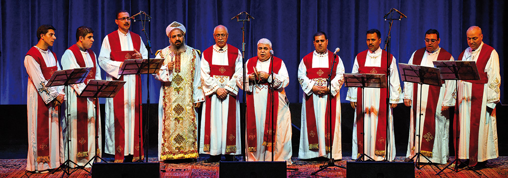

Les hymnes
Lis, écoute et apprends des hymnes coptes orthodoxes en choisissant parmi ces catégories :

Etudie l'apprentissage des diacres selon les rites coptes orthodoxes.
Lis, écoute et apprends des hymnes coptes orthodoxes en choisissant parmi ces catégories :